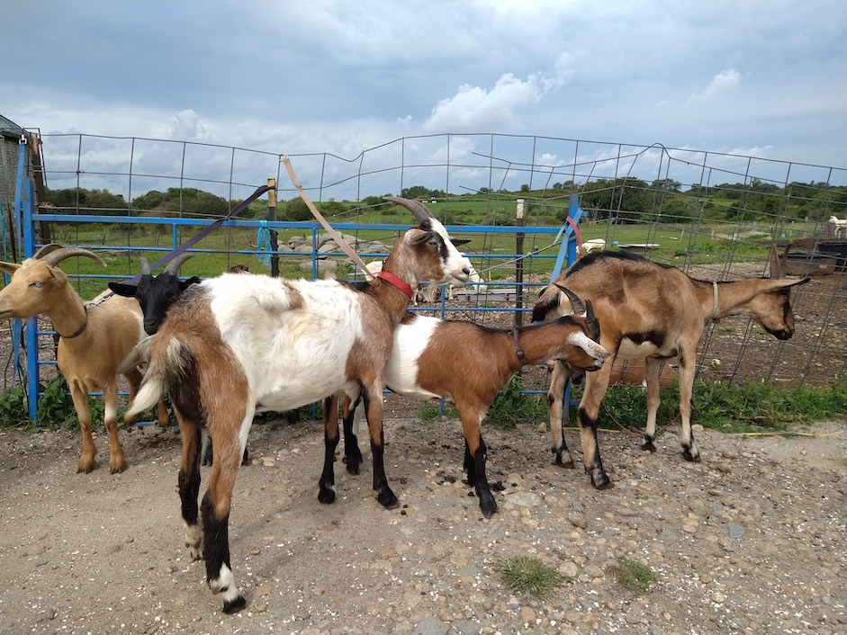
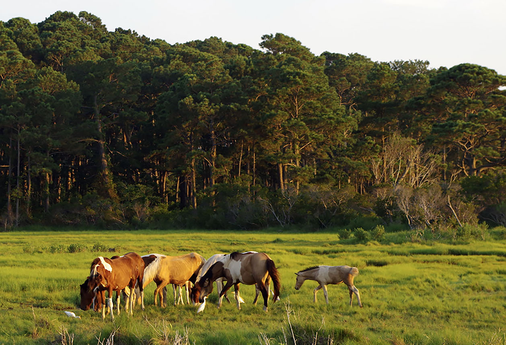
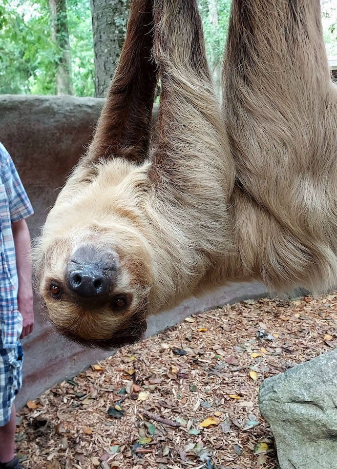
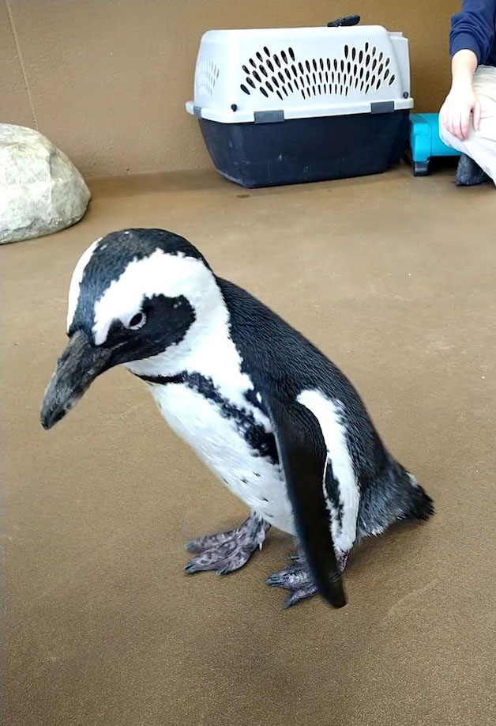

My Hobbies
In my free time I like to read and paint, although I haven't been doing either of those things as often as I should. A few years ago a friend invited me to a rock climbing gym. I really liked it! I try to go a few times a week but I'm still not very good. I also love animals. I try to meet as many animals as I can.
Here is a photo of some goats I walked one time.
These are some wild horses on Assateague Island.
Here is a sloth I got to feed...
and a penguin I got to meet. Her name is Yellow Blue.
